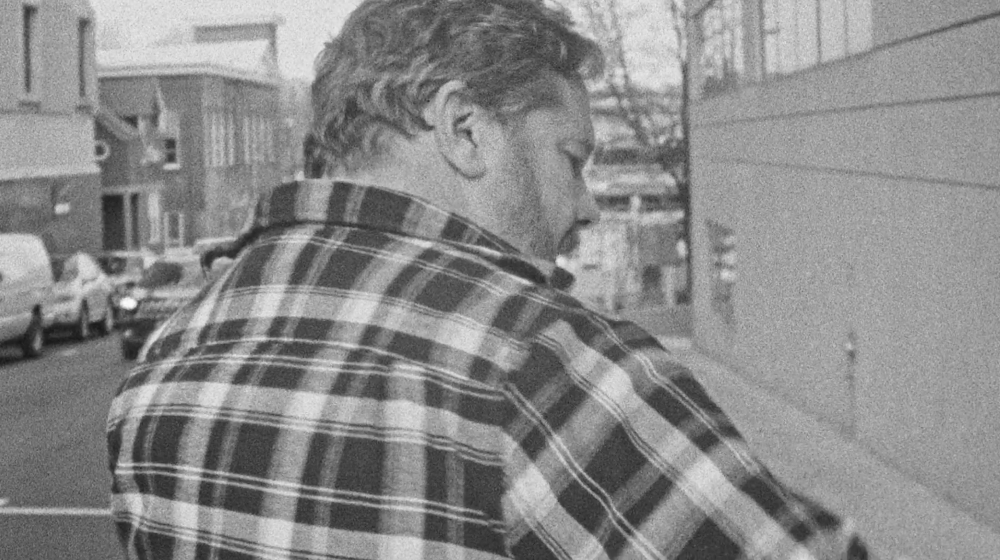
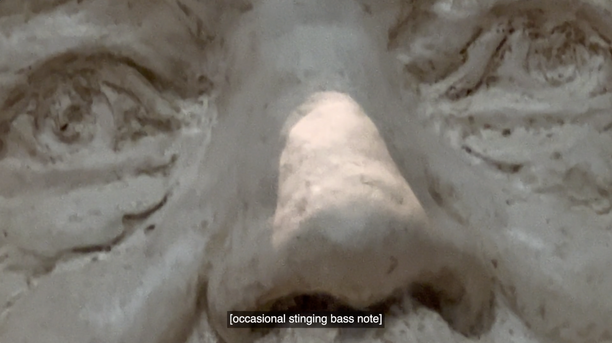
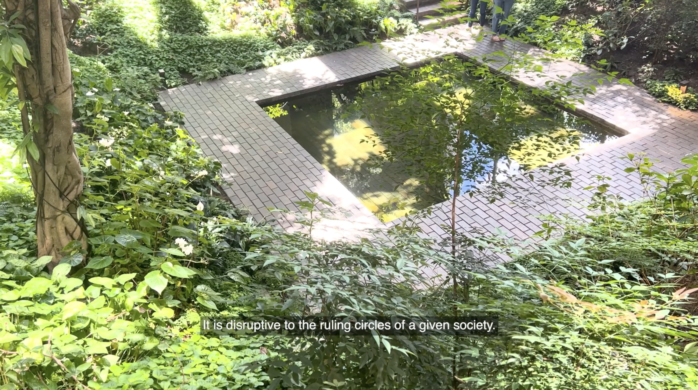

Sunset Seduction by Charles de Agustin, an evolving project centered on a 45-minute film alongside site-specific contracts and discussions, stars a liberal philanthropist yearning for his next fling with radical politics.
Made as the Palestine solidarity movement escalated in 2024, the film unfolds in essayistic fragments considering ideas of freedom, violence, and the seductive capture of revolutionary ideology. Nonprofit organizations—even those driven by equity, decolonization, abolition—are tied to an unsustainable infrastructure that consistently creeps toward establishment liberalism. Sunset Seduction revitalizes the spirit of INCITE’s The Revolution Will Not Be Funded (2007); emphasizes collective grassroots action in the popular imagination, which may include siphoning and subverting philanthropic resources, far beyond electoral politics and do-gooder grantmaking; and works toward a “more radical form of complicity” (Moten & Harney).
With influence from Faye R. Gleisser’s notion of “risk work” and histories of the contract as artistic intervention, a scene in the film explains that the artist will work with each exhibiting institution’s staff to enact a “genuine and disruptive act of treason against the socioeconomic interests of the ruling class” in order for the work to be presented, intending to materialize the particular responsibilities of cultural workers in the global north. Join us at Millennium on December 7 to find out what kind of agreement was devised for this first trial run.
SUNSET SEDUCTION (2024)
45-min art documentary dir. by Charles de Augustin
original score by Frances Chang (electronic, drone)
Watch trailer for SUNSET SEDUCTION
premiered via Millenium Film Workshop, NYC.
PUBLIC SCREENINGS:
Millenium Film Workshop, NY.
XINEMA, Vancouver, CA.
Vox Populi, South Philly
Autonomous Cinema, PA
Badnam Film Festival, Bangalore, IND.
SmashXFilm, Austin, TX
Mimesis Film Festival, Boulder, CO


